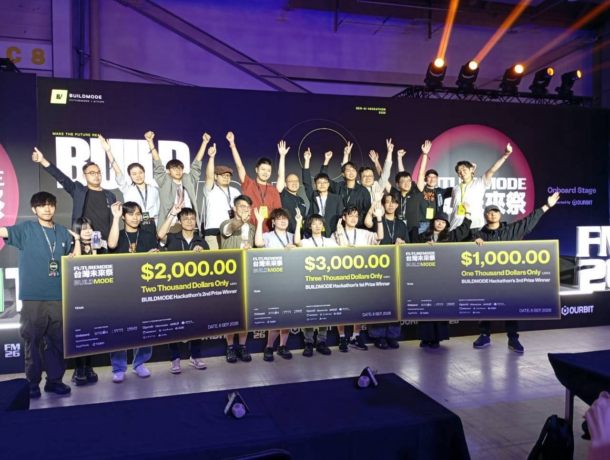

AI 與實作 · 2026.07.14–07.16
AWS Summit Taipei AI Everywhere Hackathon
PressPlay AI⁺：學習的下一步
以遊戲化、主動診斷與 AI 陪伴，回應線上學習容易中斷的問題。
數位學習組第二名看作品 ↗
A LITTLE CURIOUS. A LOT OF LULU.
嗨嗨，我是
林亭汝 ／ 北科大經營管理系
從數據、品牌到 AI，從提案舞台到排球場。
這裡收藏了大學以來，讓我成為我的那些事。
START HERE
SELECTED PROJECTS
AI 與實作 · 2026.07.14–07.16
PressPlay AI⁺：學習的下一步
以遊戲化、主動診斷與 AI 陪伴，回應線上學習容易中斷的問題。

AI 與實作 · 2026.09.04–09.06
ChatKTV：和夥伴一起動手做
在台灣未來祭的黑客松，和來自不同背景的夥伴投入創意與開發實作。